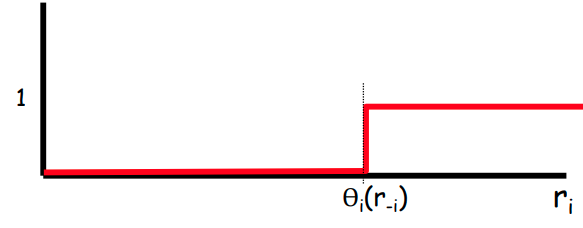

ADRC - Lesson 24
Indice
Combinatorial Auction
Nella lezione 22 abbiamo visto il gioco dell'Asta a Singolo Oggetto, in cui ogni player vuole comprare l'oggetto all'asta.
Ogni player \(i\) ha una volutazione privata \(t_i\) dell'oggetto, e fa un'offerta \(r_i\) per cercare di vincere l'asta.
Se \(i\) vince allora dovrà pagare un prezzo \(p_i\), ottenendo quindi un'utilità pari a \(u_i = t_i - p_i\).
Abbiamo anche visto che questo è un problema utilitario e che quindi è sempre possibile definire un meccanismo truthful
che induca tutti i player a dichiarere il prorpio tipo privato \(t_i\).
Il gioco dell' Asta Combinatorica, o Combinatorial Auction (in breve CA), è una generalizzazione dell'asta a singolo oggetto.
Abbiamo un'insieme di \(n\) acquirenti/player e \(m\) oggetti all'asta.
Ogni player \(i\) desidera ottenere un sottoinsieme \(S_i \subseteq \lbrace 1, ..., m \rbrace\) degli oggitti all'asta, è come tipo privato
ha la stima \(t_i\) di quanto vale l'insieme \(S_i\).
Si desidera identificare un sottoinsieme \(W \subseteq \lbrace 1, ..., n \rbrace\) di vincitori, ognuno dei quali non va in conflitto con gli oggetti desiderati dagli altri, ovvero \[ \forall i,j \in W : i \neq j \left[ S_i \cap S_j \equiv \emptyset \right] \]
Come nell'asta singola, si desidera massimizzare il valore di \(W\), ovvero la somma di tutti i tipi privati \(\sum_{i \in W} t_i\).
Se un player \(i\) vince, allora avrebbe un guadagno pari al valore che lui stima per \(S_i\). Più formalmente la valutazione \(v_i\) di ogni player sarà \[ v_i(t_i, W) = \begin{cases} t_i &\mbox{se } i \in W\\ 0 &\mbox{altrimenti} \end{cases} \;\; \forall W \in F \] È facile a questo punto osservare che anche l'asta combinatorica è un gioco utilitario. \[ \sum_{i \in W} t_i = \sum_{i = 1}^{n} v_i(t_i, W) \;\;\; \forall W \subseteq \left[ n \right] \]
A questo punto basterà applicare il meccanismo VCG:
\[ g(r) = arg \max_{W \subseteq \left[ n \right]} \sum_{i = 1}^{n} v_i(t_i, W) \]
\[ p_i(r) = \sum_{j \neq i} v_j(r_j, g(r_{-i})) - \sum_{j \neq i} v_j(r_j, g(r)) \]
Constatato che il gioco CA è utilitario e che l'algoritmo \(g\) calcola una soluzione ottima, ci si può chiedere quanto è effettivamente complesso
(in termini computazionali) calcolare un outcome di \(g\).
THM
Consideriamo il giocoCAcon \(m\) oggetti ed \(n\) players. Approssimare una soluzione ottima calcolata da \(g\) di un fattore migliore di \(m^{1/2 - \varepsilon}\) è NP-Hard, per ogni costante \(\varepsilon > 0\).
Proof: Il teorema verrà dimostrato mostrando una riduzione polinomiale dal problema Maximum Independent Set (
MAX-IS).Dato un grafo con \(n\) nodi, dal teorema di J.Håstad, 2002 sappiamo che approssimare
MAX-ISdi un fattore migliore \(n^{1-\varepsilon}\) è NP-Hard.
Prendiamo un'istanza \(G=(V,E)\) di
MAX-IS, e per ogni arco associamo un oggetto all'asta, mentre per ogni nodo associamo un player. Poniamo poi per ogni player \(i\) l'insieme \(S_i\) pari all'insieme dei suo archi incidenti, e \(t_i = 1\).
È possibile dimostrare che un'istanza di
CA(ricavata col metodo appena descritto) ha una soluzione di valore \(\geq k\) se e solo se la relativa istanza diMAX-ISha un independent set di dimensione \(\geq k\).
- \(\Rightarrow\)
- Supponiamo di avere una soluzione \(W\) di valore \(k\) per l'istanza di
CA. Dato che \(W\) è una soluzione ammissibile, allora per definizione non ci saranno due player \(i, j \in W\) che condivideranno qualche oggetto, ovvero \(S_i cap S_j \equiv \emptyset\). Però \(S_i\) ed \(S_j\) rappresentano gli archi incidenti ai rispettivi nodi \(i\) e \(j\) dell'instanza diMAX-IS, e visto che non si intersecano allora certamente \(i\) e \(j\) non saranno vicini. Perciò, dato che il valore di ogni \(S_i\) è pari a \(t_i = 1\), avremo che \(W\) è anche un independent set grande \(k\) per \(G\).- \(\Leftarrow\)
- Supponiamo ora di avere un independent set \(I\) grande \(k\) per l'istanza \(G\) di
MAX-IS. Per definizione, per ogni coppia di nodi \(i, j \in I\) essi non sono nodo adiacenti, perciò i rispettivi insiemi di archi incidenti non si intersecano. Dato però che i rispettivi archi incidenti compongono gli insiemi \(S_i\) ed \(S_j\), avremo che \(S_i \cap S_j \equiv \emptyset\). Perciò \(I\) è anche una soluzione di valore \(k\) per l'istanza diCA.Perciò consideriamo una soluzione \(W\) per
CAdi dimensione \(k\), con \(k\) sufficientemente grande in modo tale da ottenere \[ \frac{OPT_{\texttt{CA}}}{k} \leq m^{1/2 - \varepsilon} \]Ciò implica che esiste un independent set \(I\) di cardinalità \(k\) tale che \[ \frac{OPT_{\texttt{MAX-IS}}}{k} = \frac{OPT_{\texttt{CA}}}{k} \leq m^{1/2 - \varepsilon} \leq n^{1 - 2\varepsilon} \] dove l'ultima uguaglianza è data dal fatto che \(m \leq n^2\).
Perciò se avessimo un algoritmo che riesce a calcolare \(W\) in tempo efficiente, allora avremo anche un modo di approssimare
MAX-ISin maniera efficiente a un fattore più piccolo di n1 - 2ε \(\square\).
An efficient truthful mechanism
È possibile dimostrare che il problema CA è anche un problema one-parameter (OP), più precisamente del tipo binary-demand (BD).
Certamente i tipi privati sono un singolo paramentro \(t_i \in \mathbb{R}\).
Inoltre ponendo la funzione di carico di lavoro su valori binari \(w_i(\cdot) \in \lbrace 0, 1 \rbrace\) otterremo che la valutazione sarà
\[
v_i(t_i, x) = t_i \cdot w_i(x) = \begin{cases}
t_i &\mbox{se } i \in x\\
0 &\mbox{altrimenti}
\end{cases}
\;\;\; \forall x \in F
\]
ergo CA è anche un gioco OP.
Nella lezione precedente abbiamo visto i meccanismi one-parameter per problemi di minimizzazione. In questo caso il problema è di massimizzazione, perciò la monotonia dell'algoritmo \(g\) deve essere in non decrescente, ovvero:
per ogni player \(i\) e per ogni configurazione di strategie degli altri player \(r_{-i} = (r_1, ..., r_{i-1},r_{i+1}, ..., r_n)\) la funzione di carico di lavoro \(w_i(r_{-i}, r_i)\) deve essere non decrescente al crescere del valore dichiarato \(r_i\), ovvero della froma

Figura 1: Funzione di carico di lavoro \(w_i\) per un problema binary demand di massimizzazione.
Sappiamo già che lo schema di pagamenti del player \(i\) sarà una quantità \(p_i(r) = \theta_i(r_{-i})\).
Ciò che manca per concludere la definizione di un meccanismo truthful è la definizione di algorimo \(g\) che sia monotono,
che approssimi bene una soluzione ottima e che sia calcolabile in tempo polinomiale.
A greedy \(\sqrt{m}\)-approximation algorithm
Alg
- Input
- Una serie di tipi dichiarati \(r_1, r_2, ..., r_n\) e una serie rispettivi insiemi desiderati \(S_1, S_2, ..., S_n \subseteq \left[ m \right]\).
- Output
- Un sottoinsieme \(W \subseteq \left[ n \right]\) di vincitori dell'asta con insiemi non in conflitto. Ovvero per ogni \(i,j \in W\) avremo che \(S_i \cap \S_j \equiv \emptyset\).
- ALG
- riordina (e rinomina) le offerte (i tipi dichiarati) secondi il seguente ordine \[ \frac{r_1}{\sqrt{\vert S_1 \vert}} \geq \frac{r_2}{\sqrt{\vert S_2 \vert}} \geq ... \geq \frac{r_n}{\sqrt{\vert S_n \vert}} \]
- Poni gli insiemi \(W = \emptyset\) e \(X = \emptyset\).
- \begin{align*} \texttt{for } &\texttt{i=1:n do}\\ &\texttt{if } S_i \cap X \equiv \emptyset \texttt{ then}\\ &\;\;\;W = W \cup \lbrace i \rbrace\\ &\;\;\;E = E \cup S_i \end{align*}
- return \(W\).
Lemma 1 l'algoritmo \(g\) appena descritto è monotono.
Proof: è sufficiente dimostrare che dato un agente \(i\) selezionato nella soluzione \(W\), anche se esso aumenta la sua offerta lui continuerà ad essere selezionato. Infatti, rifacendoti alla funzione di carico di lavoro dei problemi binary demand (come quella in Figura 1), avremo che una volta che \(r_i\) supera la soglia \(\theta_i(r_{-i})\) i valore di \(w_i\) non decresce più (rimane fisso a 1).
Osservando l'ordinamento dell'algoritmo \[ \frac{r_1}{\sqrt{\vert S_1 \vert}} \geq ... \geq \frac{r_i}{\sqrt{\vert S_i \vert}} \geq ... \geq \frac{r_n}{\sqrt{\vert S_n \vert}} \] avremo che aumentando \(r_i\) la posizione nel raching cresce, spostandosi verso sinistra.
Dato che l'algoritmo sceglie in maniera greedy da sinistra verso destra, avremo che se \(i\) veniva selezionato dichiarando \(r_i\), certamente continuerà ad essere selezionato se dichiara \(r_i + k\), per qualsiasi \(k > 0\) \(\square\).
Computing payments
Abbiamo visto che i pagamenti per i giochi OP binary demand sono del tipo \(p_i(r) = \theta_i(r_{-i})\).
Ciò che serve sapere è come ricavare la soglia \(\theta_i(r_{-i})\).
Una volta individuato un modo per ricavare la soglia, è possibile farlo in maniera efficiente?
Fissiamo un player \(i\), una configurazione di strategie \(r = (r_{-i}, r_i)\) e consideriamo sempre l'ordinamento fatto nell'algoritmo \(g\).
Vogliamo sapere quanto deve essere grande almeno \(r_i\) affinché nell'ordinamento \(i\) venga scelto.
Certamente chi sta prima di lui nell'algoritmo viene scelto e non interferisce con \(i\).
Perciò considerimo il primo player \(j\) non compatibile a destra di \(i\) nell'ordinamento, ovvero tale che \(S_i \cap S_j \not\equiv \emptyset\).
Dato che \(j\) è incompatibile con \(i\), se \(j\) venisse scelto allora per forza \(i\) non apparterrebbe alla soluzione \(W\).
Perciò affinché \(i\) venga scelto nella soluzione deve essere necessariamente vero che
\[
\frac{r_i}{\sqrt{\vert S_i \vert}} \geq \frac{r_j}{\sqrt{\vert S_j \vert}}
\]
ovvero la soglia di accettazione per \(i\) sarà
\[
\theta_i(r_{-i}) = \frac{r_j}{\sqrt{\vert S_j \vert}} \sqrt{\vert S_i \vert} = r_j \frac{ \sqrt{\vert S_i \vert} }{ \sqrt{\vert S_j \vert} }
\]
Se invece non ci sono player incompatibili con \(i\), allora certamente \(i\) verrà scelto in \(W\) e quindi avremo che \(\theta_i(r_{-i}) = 0\).
Fattore Approssimazione
Lemma 2 Sia \(OPT\) una soluzione ottima per il problema
CA, e sia \(W\) una soluzione calcolata dall'algoritmo descritto. Allora avremo che \[ \sum_{i \in OPT} r_i \leq \sqrt{m} \sum_{i \in W} r_i \] ovvero l'algoritmo è \(\sqrt{m}\)-approssimante.
Proof: consideriamo un player vincente \(i \in W\). Definiamo l'insieme \[ OPT_i \equiv \lbrace j \in OPT : j \geq i \land S_j \cap S_i \not\equiv \emptyset \rbrace \] ovvero l'insieme di tutti i player \(j\) non compatibili con \(i\) rispetto all'ordinamento dell'algrotimo, e che si trovano alla sua destra.
Osserviamo che \[ \bigcup_{i \in W} OPT_i \equiv OPT \] Infatti consideriamo un player nella soluzione ottima \(j \in OPT\). Abbiamo due casi:
- Caso 1
- Se \(j\) appartiene anche alla soluzione \(W\) calcolata dall'algoritmo, allora certamente \(j \in OPT_j\).
- Caso 2
- Se invece \(j \notin W\) sicuramente esisterà un \(i \in W\) con \(i < j\) incompatibile (ovvero \(S_j \cap S_i \not\equiv \emptyset\)). Infatti, l'algoritmo inserisce i player nella soluzione \(W\) in ordine dal più piccolo al più grande, e se una volta arrivato a \(j\) esso fosse compatibile coi precenti, allora sarebbe stato inserito nella soluzione \(W\) (ritornando al caso 1). Perciò necessariamente \(j \in OPT_i\).
Per dimostrare il teorema basterà dimostrare che \(\forall i \in W\) \[ \sum_{j \in OPT_i} r_j \leq \sqrt{m} \; r_i \] infatti se così fosse avremo che \[ \sum_{j \in OPT} r_j \leq \sum_{i \in W} \sum_{j \in OPT_i} r_j \leq \sum_{i \in W} \sqrt{m} \; r_i = \sqrt{m} \sum_{i \in W} r_i \]
Consideriamo un \(i \in W\). Dalla sezione precende sappiamo che per ogni \(j\) a destra di \(i\) (ovvero \(j \geq i\)), \(i\) verrà scelto dall'algoritmo se e solo se \[ r_i \geq r_j \frac{ \sqrt{\vert S_i \vert} }{ \sqrt{\vert S_j \vert} } \] perciò viceversa \[ r_j \leq r_i \frac{ \sqrt{\vert S_j \vert} }{ \sqrt{\vert S_i \vert} } \] e questo è anche vero per ogni \(j \in OPT_i\).
Perciò avremo che per ogni \(i \in W\) \[ \sum_{j \in OPT_i} r_j \leq \sum_{j \in OPT_i} r_i \frac{ \sqrt{\vert S_j \vert} }{ \sqrt{\vert S_i \vert} } = \frac{ r_i }{ \sqrt{\vert S_i \vert} } \sum_{j \in OPT_i} \sqrt{\vert S_j \vert} \] Diamo ora un upperbound alla sommatoria \(\sum_{j \in OPT_i} \sqrt{\vert S_j \vert}\).
La disuguaglianza di Cauchy-Schwarz ci dice che dati due vettori \(n\)-dimensionali \(x,y\) è vero che \[ \left( \sum_{j = 1}^{n} x_i y_i \right) \leq \left( \sum_{j = 1}^{n} x_i^2 \right)^{1/2} \left( \sum_{j = 1}^{n} y_i^2 \right)^{1/2} \] Nel nostro caso ponendo \(x_j = 1\), \(y_j = \sqrt{\vert S_j \vert}\) ed \(n = \vert OPT_i \vert\) otterremo che
\begin{align*} \sum_{j \in OPT_i} \sqrt{\vert S_j \vert} &= \sum_{j = 1}^{\vert OPT_i \vert} 1 \cdot \sqrt{\vert S_j \vert} \leq \left( \sum_{j = 1}^{\vert OPT_i \vert} 1 \right)^{1/2} \left( \sum_{j = 1}^{\vert OPT_i \vert} \vert S_j \vert \right)^{1/2}\\ \\ &= \sqrt{\vert OPT_i \vert} \cdot \sqrt{ \sum_{j = OPT_i} \vert S_j \vert } \end{align*}Per quanto riguarda \(\vert OPT_i \vert\) ci potrà essere al più un altro player \(j\) per ogni oggetto desiderato da \(i\) in \(S_i\). Perciò \(\vert OPT_i \vert \leq \vert S_i \vert\).
Invece per \(\sum_{j = OPT_i} \vert S_j \vert\), dato che tutti i \(j\) appartengono alla soluzione \(OPT\), certamente saranno tutti compatibili tra di loro, e quindi \[ \sum_{j = OPT_i} \vert S_j \vert\ = \vert \bigcup_{j \in OPT_i} S_j\vert \] Infine dato che \[ \bigcup_{j \in OPT_i} S_j \subseteq \bigcup_{j \in OPT} S_j \subseteq \left[ m \right] \] possiamo concludere che \(\sum_{j = OPT_i} \vert S_j \vert \leq m\).
Ricapitolando abbiamo dimostrato che \[ \sum_{j \in OPT_i} \sqrt{\vert S_j \vert} \leq \sqrt{\vert OPT_i \vert} \cdot \sqrt{ \sum_{j = OPT_i} \vert S_j \vert } \leq \sqrt{\vert S_i \vert} \cdot \sqrt{m} \] \[ \implies \sum_{j \in OPT_i} r_j \leq \frac{ r_i }{ \sqrt{\vert S_i \vert} } \sum_{j \in OPT_i} \sqrt{\vert S_j \vert} \leq \frac{ r_i }{ \sqrt{\vert S_i \vert} } \sqrt{\vert S_i \vert} \cdot \sqrt{m} = \sqrt{m} \cdot r_i \] \[ \implies \sum_{j \in OPT} r_j \leq \sum_{i \in W} \sum_{j \in OPT_i} r_j \leq \sqrt{m} \sum_{i \in W} r_i \;\;\; \square \]